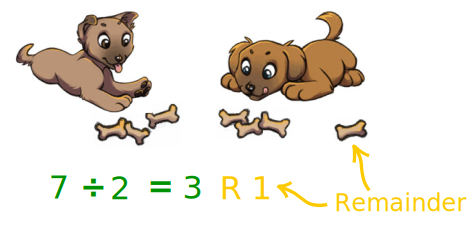
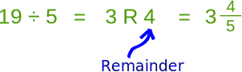

Division and Remainders
Sometimes when dividing there is something left over. It is called the remainder.
Example: There are 7 bones to share with 2 pups.
But 7 cannot be divided exactly into 2 groups,
so each pup gets 3 bones,
and there is 1 left over:

We say:
"7 divided by 2 equals 3 with a remainder of 1"
And we write:
7 ÷ 2 = 3 R 1
As a Fraction
It is also possible to cut the remaining bone in half, so each pup gets 3 ½ bones:
7 ÷ 2 = 3 R 1 = 3 ½
"7 divided by 2 equals 3 remainder 1 equals 3 and a half"
Play with the Idea
Try changing the values here ... sometimes there will be a remainder:
Check by Multiplying
If we look at it "the other way around" we can check our answer:
2 × 3 + 1 = 7
"2 groups of 3, plus 1 extra, equals 7"
Another Example

19 cannot be divided exactly by 5. The closest we can get (without going over) is:
3 x 5 = 15
which is 4 less than 19.
So the answer of 19 ÷ 5 is:
19 ÷ 5 = 3 R 4
Check it by multiplying: 5 × 3 + 4 = 19
As a Fraction
We can also make a fraction with:
- the remainder on top, and
- the number you are dividing by on the bottom,
so we also have:
19 ÷ 5 = 3 R 4 = 3 4/5